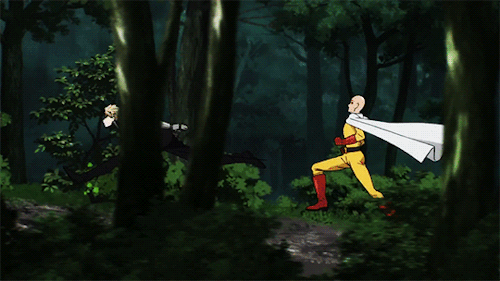
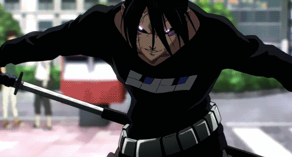
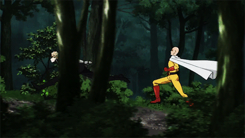
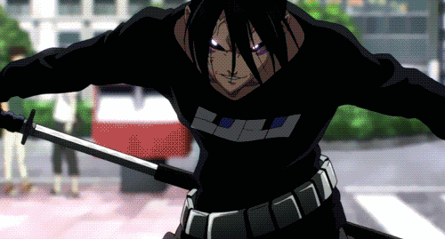
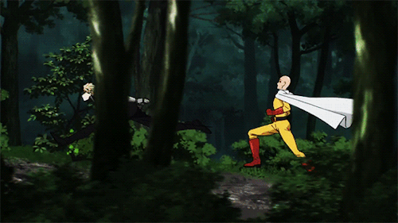
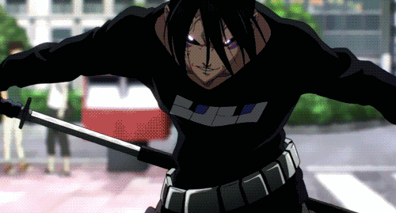
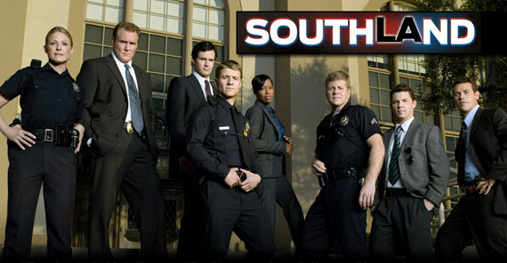
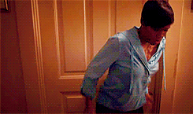

One of the most exciting, hilarious, and eye-appealing
anime I've ever watched is One Punch Man. It may sound
like a cheesy show from the title but it gives hint to
the playful side of the series.


This addicting and dramatic tv series will have you paying
more attention to your surroundings. It's thrilling
shootouts and suspenseful ultimatums resulted in my
love for this series. If you need a new show to watch, go find Southland!

